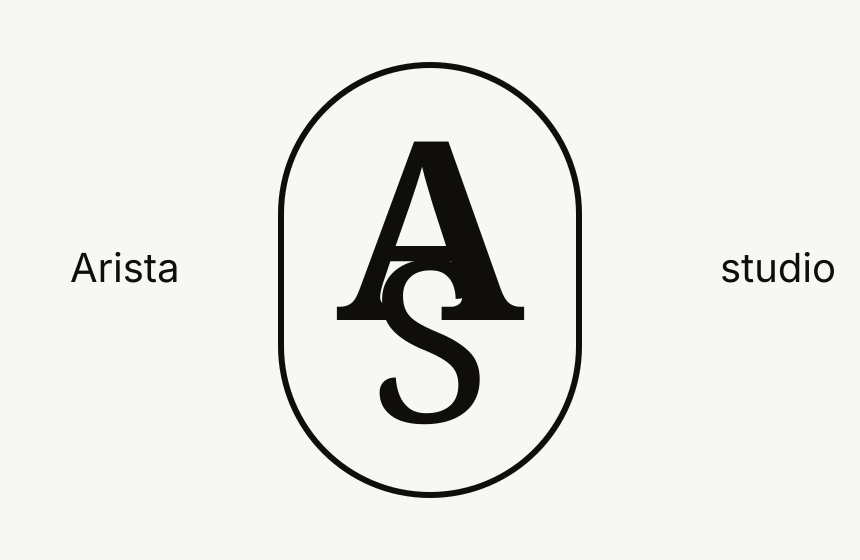

Restaurant
Launch Presence
Campaign concept, feed rhythm, menu storytelling, and refined content direction.

Creative Focus
Choose a category to explore the kind of brand atmosphere ARISTA can shape.
Campaign concept, feed rhythm, menu storytelling, and refined content direction.
Warm product visuals, lifestyle captions, and a consistent Instagram atmosphere.
Minimal identity, elegant campaigns, visual guidelines, and polished brand tone.